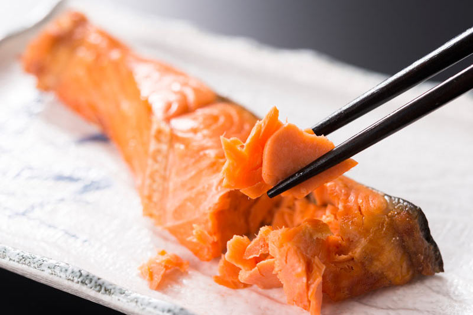
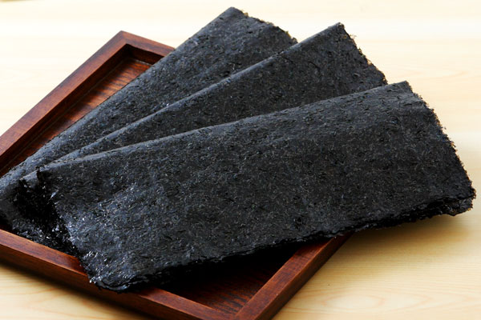

お米のこだわり
北海道産ゆめぴりかを使用
ゆめぴりかは、強い粘りを持ち、冷めてもモチモチ感と粒感が際立ち、食べ応えがあるのでおにぎりとして美味しくいただけます。 炊きあがりが柔らかく、艶が出るためつやつやのおにぎりになります。糖の量が多いため豊かな 甘味が感じられ。旨味たっぷりのおにぎりに出来上がります。
具材のこだわり
地元農家直送の美味しい食材
四季折々、彩り豊かなお総菜や、旬のこだわり素材を使った多彩なおむすびが登場します。おむすびは、常時14種類前後をご用意しています。
毎日しっかりとだしをとり、お店で赤味噌と白味噌を合わせてつくるお味噌汁も自慢の一品です。日替わりの汁物もお楽しみください。
※化学調味料など一切使用していないので安心していただけます。
味のこだわり
シンプルな味で懐かしい
海苔：風味の優れた国産海苔を厳選し、食べやすいように「大きくたすき形」に巻きます。味付けのりも用意しているのでご購入の際に店員にお声がけください
塩：ミネラルを豊富に含んだ沖縄産海水塩を使用。ごはんの甘みと旨みがひきたちます。
握り方のこだわり

美味しいご飯を作る秘
お米をサッと研ぎ、浸水させる時間を作る。こうすることで、お米に水分が入りしっとりとしたお米になります。 お米を炊く際の水を気持ち少なめにします。土鍋を使うことでお米がふっくらと仕上がります。 炊き上がったらすぐかき混ぜます。空気を含むように優しく丁寧に行うことでお米の風味を維持できます。